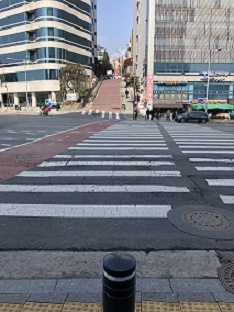
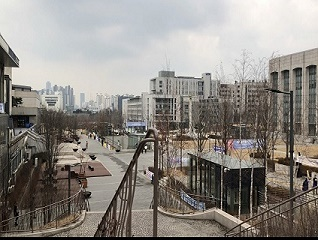

Something Random
A day before my flight back to the U.S., I had gone out to several stores 40 minutes away from my dorm (on foot) in order to get some souvenirs for my friends and family. On the way back to my dorm, I came across a very steep road that took me by surprise. It was just something so normal yet so interesting.
I remember really enjoying the view of Yonsei University, which was where I was to study abroad at. The picture below shows the view facing the front gate of the school, as well as the entrance to a student center located just below ground level. In the back of the school, there were also many beautiful, older buildings with vines running up the outer wall.
